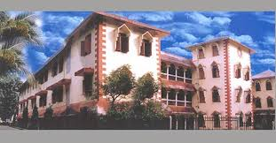
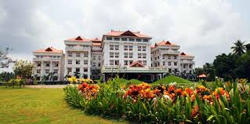

I completed my schooling at St Thomas Central School, Mukkolakal in Thiruvananthapuram. I studied there from 2010-2024 and passed out with 94% in my +2 examinations. My school provided me with a lot of opportunities to express myself and enhance my skills and for that I'm extremely grateful.

I am currently studying at Amrita School of Engineering, Amritapuri in Kollam, Kerala. I am pursuing a B Tech degree in computer science and engineering at the university. The college provides courses that help hone the skills necessary for a software engineer. I am currently in my second semester at Amrita.